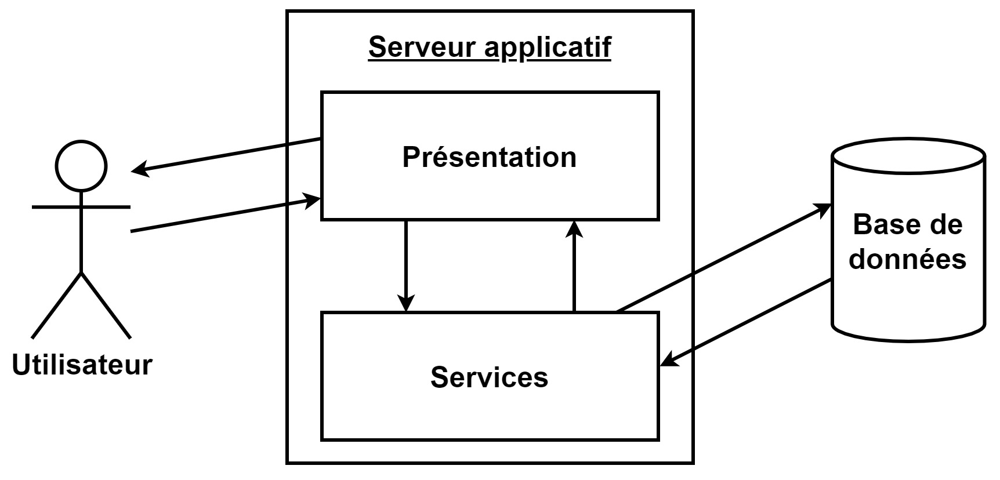
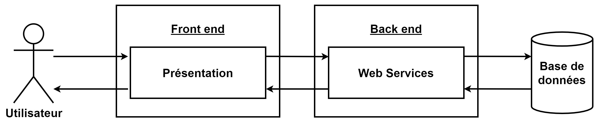
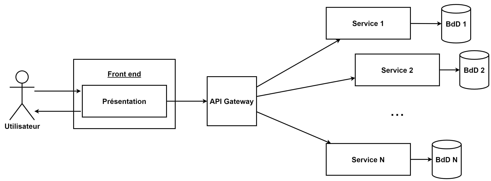

Cloud Computing, CM5
Faire une API dans le Cloud
Pépin Rémi, Ensai, 2024
remi.pepin@insee.fr
Différent type d'architecture
Architecture monolithique
Architecture monolithique
- Un même code gère la partie présentation et service
- Fort couplage
- Difficile de passer à l'échelle seulement une partie du code
- Si un traitement prend de la ressource, c'est toute l'application qui est impactée
- Génération de la page côté serveur
Les frameworks comme Django,
Flask (python) ou Spring MVC, Struts (java) utilisent ce modèle.
Bien pour commencer, architecture monolith first
Architecture 3 tiers
Architecture 3 tiers
- Séparation de la présentation et des services
- Communication via HTTP/HTTPS
- Difficile de passer à l'échelle seulement une partie du code
- Si un traitement prend de la ressource, c'est tout le backend qui est impactée
Les frameworks comme FastAPI,
FlaskRESTfull (python), Spring WEB (java)permettent de faire le
backend. Le front end est en React/Angular/Vuejs
Architecture micro service

Architecture micro service
- Séparation de la présentation et des services entre eux
- Communication via HTTP/HTTPS
- Les services peuvent être dans des langages différents
- Possibilité de faire passer à l'échelle qu'un service
- Chaque service utilise sa base pour avoir de meilleures performances
Demande de déployer et monitorer
plusieurs services. Pas de centralisation de la sécurité et du
monitoring
Architecture API Gateway
Architecture API Gateway
- Point d'entrée unique (reverse proxy)
- Sécurité/monitoring
- Moins de certificats à gérer
- 1 gateways par client (web, application, api tiers)
- Caching
- Limitation (ex X req/mois)
L'API Gateway sert de point
d'entrée unique pour nos services. Centralise sécurité/monitoring
et permet des traitements sur les données en transit.
Amazon API Gateway
Amazon API Gateway
- Service serverless : pas d'infra à gérer
- REST (Stateless) ou Websocket (Stateful)
- Intégré dans l’écosystème AWS
Vocabulaire
- Ressource : entité logique accessible via une requête (/user, /post etc)
- Méthode : combinaison d'une ressource et d'un verbe HTTP (GET /user, POST /task etc)
- Stage : un état du cycle de vie de l'API (par exemple, 'dev', 'prod', 'beta', 'v2'). Un API Gtw peut en avoir plusieurs. ~version
Workflow

Workflow
Possibilité d'agir à différents niveau du traitement. Exemple :
- Refuser une requête si un header n'est pas présent
- Authentifier un utilisateur
- Créer l'objet event de la lambda (Lambda Proxy)
- Mocker une réponse
Dans le cas du TP vous n'allez
pas modifier la requête, et seulement utiliser les Lambda Proxy
API Gateway in a nutshell 🥜
- ✅Expose une API
- 🛂Permet de centraliser sécurité, monitoring
- 👨👨👧HTTP, Rest, WebSocket Api
- 🦠Architecture micro service
- 🔬Possibilité d'agir à toutes les étapes
- 🌍Chaque endpoint peut être associé à un service différent
- ⛅Avec AWS Lambda et DynamoDB possibilité de faire du 100% serverless
AWS Serverless Application Model (SAM)
SAM in a nutshell 🥜
- 🧱Outil IaC spécifique AWS (👿)
- ✅Uniquement pour le Serverless (Lambba, S3,API Gtw, DynamoDB, SQS, ...)
- 📜SAM template au forma yaml (🛑 indentation)
- 🔄Version simplifiée de Cloud Formation
- 🎇Permet de faire du debug en local !!
Sam Template simplifié
Transform: AWS::Serverless-2016-10-31
Globals:
Set of globals variables. Ex timeout, language etc
Description:
A short text to explain what your template do and how it work
Resources:
Set of resources. Basically the most important part of the template !
Outputs:
Set of outputs like API Gtw url, lambda name, S3 buck name etc
sam deploy pour déployer tout ça
Ne pas hésiter à faire des recherches pour remplir le template !
Les autres commandes
# Appeler une fonction lambda en local avec un json de test
sam local invoke FunctionName --event events/event_file.json
# Lancer une API Gtw en local
sam local start-api
# Récupérer les logs d'une fonction lambda
sam logs -n FunctionName --stack-name sam-app
# Supprimer toute une stack
aws cloudformation delete-stack --stack-name sam-app
Example - API Gtw + Lambda
Resources:
TasksApi:
Type: AWS::Serverless::Api
Properties:
StageName: prod
CreateTaskFunction:
Type: AWS::Serverless::Function
Properties:
CodeUri: src/handlers/createTask
Handler: app.handler
Events:
PostTaskFunctionApi:
Type: Api
Properties:
RestApiId: !Ref TasksApi
Path: /tasks
Method: POST
GetTasksFunction:
Type: AWS::Serverless::Function
Properties:
CodeUri: src/handlers/getTasks
Handler: app.handler
Events:
GetTasksFunctionApi:
Type: Api
Properties:
RestApiId: !Ref TasksApi
Path: /tasks
Method: GET
TP API Gtw, Lambda et Sam
Objectifs
- Développer une application simple à base de micros services
- Servira d'exemple pour le TP noté